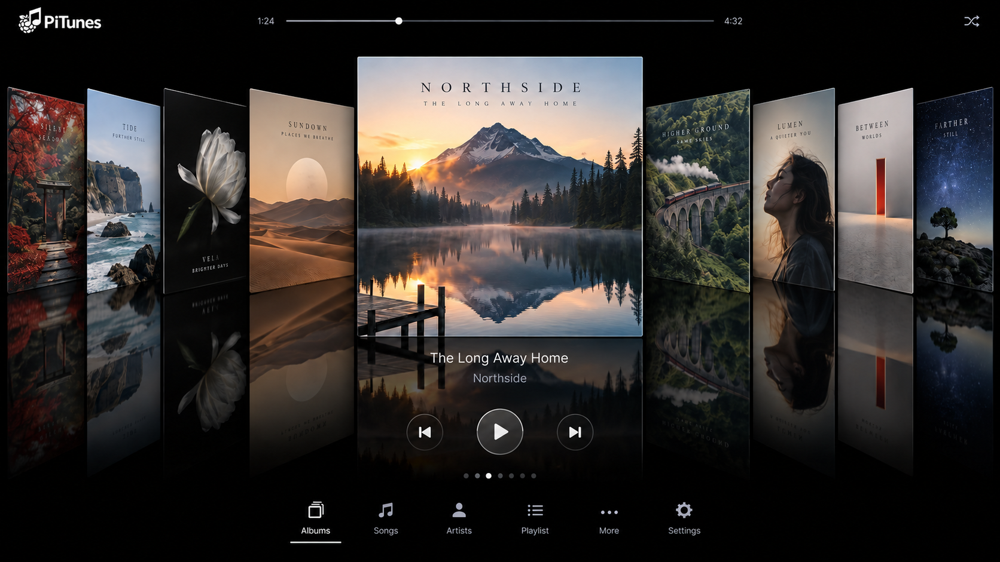

What it is
- Flashable Pi OS image built on Raspberry Pi OS Lite
- Web UI at
http://pitunes.localon your home network - Private appliance for your home network — not a public website
- Pi 3, Pi 4, Pi 5, and Pi Zero 2 W (32-bit and 64-bit images)
A lightweight music player with CoverFlow, local libraries and internet radio. Available for Raspberry Pi and as a bootable USB preview for Intel and AMD PCs.
Browse and play your music from the Pi or PC display, or from a browser on your home network.

Illustrative CoverFlow preview. The PiTunes Raspberry Pi boot-screen image remains above.
http://pitunes.local on your home networkIn Settings, export favourite songs, every song in favourite albums, and all or selected playlists to one UTF-8 CSV. Duplicates are merged without losing album and playlist membership.
Dedicated filename, extension, and relative-path columns help you find those files in Finder or Windows Explorer. Favourite flags, playlist positions, and blank Keep and Notes columns make the list ready for curation.
| Pi | Image |
|---|---|
| Pi 3, Pi 3 B+, Pi Zero 2 W | pitunes-armhf.img.xz (32-bit) |
| Pi 4, Pi 5 | pitunes-arm64.img.xz (64-bit) |
Flash with Raspberry Pi Imager (Use custom), Balena Etcher, or dd.
http://pitunes.local in a browser on the same network./mnt/music.Boot directly into PiTunes without a login. No installation to the PC's internal drive is required. These builds have been tested in an emulator and are ready for hardware testing.
| PC | USB image |
|---|---|
| 64-bit Intel or AMD Debian 13.8 |
64-bit image |
| 32-bit Intel or AMD with PAE and SSE3 Debian 12 LTS |
32-bit image |